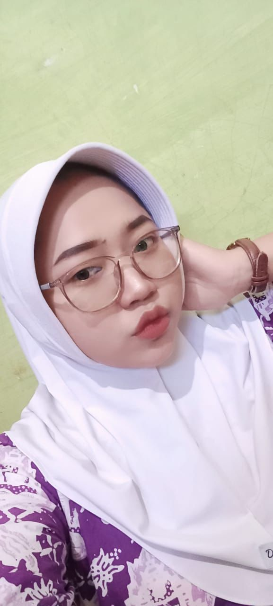

<div style="display: flex; flex-wrap: wrap; align-items: center; gap: 20px;">
  
  <div style="flex: 1; min-width: 280px;">
    <h2>Kegiatan Seorang Perawat</h2>
    <p>Perawat adalah garda terdepan dalam pelayanan kesehatan. Di blog ini, Khilwa berbagi kegiatan sehari-hari sebagai mahasiswa keperawatan: praktik klinik, edukasi pasien, pengalaman merawat pasien anak hingga lanjut usia, serta kegiatan sosial di masyarakat.</p>
  </div>
</div>
